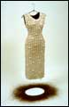

|  |
|
Erica Spitzer Rasmussen |
Hair Stories
July 14–September 3, 2000
Minnesota Artists Gallery
Opening reception: Thursday, July 13, 7–9 p.m.
This exhibition and event series will present the work of four visual artists, three writers, and one art historian to explore the personal, cultural, and mythological significance of hair. Because everyone has personal associations with hair, the gallery design will provide opportunities for museum visitors to contribute to a collaborative work.